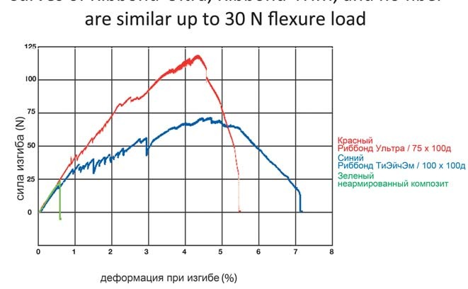
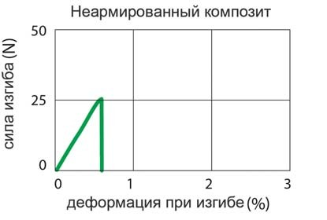
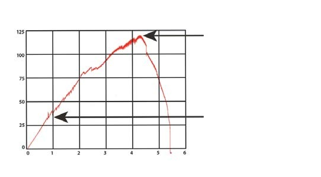
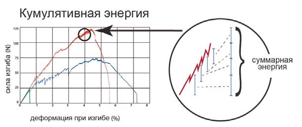
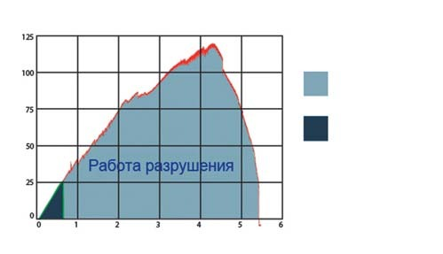
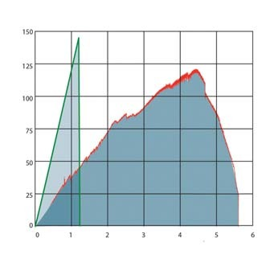
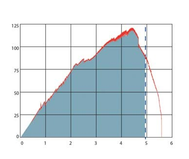
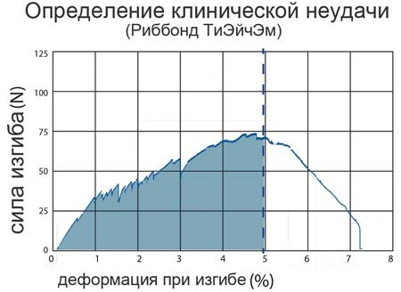
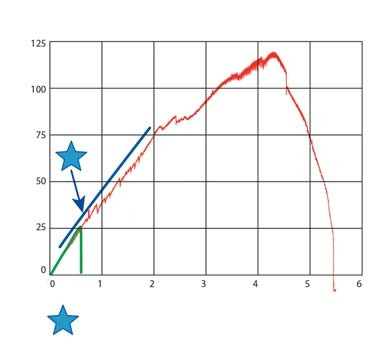
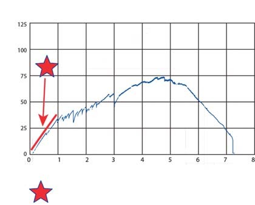

Переклади · журнал «ДентАрт» 2015 №4
Як оцінити міцність скловолокна
HOW TO EVALUATE STRENGTH FOR DENTAL FIBER REINFORCEMENTS
Один з провідних світових учених у галузі матеріалів, Дж.Е. Гордон, писав у своїй книзі «Нова наука про міцність матеріалів»: «Найбільший мінус у будівельному матеріалі — не брак міцності або жорсткості, хоча це дуже затребувані властивості, а недостатня ударна міцність, тобто відсутність опору поширенню тріщин». Інакше кажучи, матеріали ламаються не через недостатню міцність на згинання або жорсткість, а через відсутність зламостійкості.
Слід з обережністю прогнозувати клінічні характеристики матеріалу, ґрунтуючись лише на даних його тестування на міцність, оскільки існує багато різних видів міцності. Якщо ми хочемо оперувати даними про певний вид міцності, при прогнозі клінічних характеристик матеріалу необхідно спочатку з'ясувати, як саме цей вид міцності впливає на клінічний ефект. Щоб визначити вид міцності, який нас цікавить, слід визначити клінічну проблему.
При оцінці міцності матеріалу в стоматологічній галузі традиційно покладалися на показники міцності на згинання і модуль пружності при згинанні. Однак, на думку Дж.Е. Гордона, певний вид поломок відбувається не через брак міцності на згинання, а через відсутність зламостійкості. Таким чином, якщо матеріал ламається, то його слабкою ланкою є низький опір на злам, а не низька міцність на згинання. Виходячи з цього: чи повинні ми передусім перевіряти матеріал на зламостійкость, а не на міцність на згинання? У пропонованій статті описується, як оцінити опір скловолокна на злам. На закінчення описані переваги матеріалу Ріббонд Ультра/Ribbond-Ультра над Ріббонд Оріджинал/Ribbond Original та Ріббонд ТіЕйчЕм/Ribbond-THM.
На графіку 1 показано чотириточкові результати тесту, який визначає зв'язок між напругою і деформацією неармованого композиту, композиту, армованого волокном Ріббонд Ультра, та композиту, армованого волокном Ріббонд ТіЕйчЕм. Стоматологи, певно, не звикли бачити такі графіки, як цей, із «зубчастими» кривими. Графіки кривих Ріббонд Ультра і Ріббонд ТіЕйчЕм демонструють частоту зламів, а саме, ті випадки, коли тріщина починається і проходить на невелику відстань, але зупиняється завдяки унікальним вузловим перетинам волокна перевивального плетіння, яке запатентував Ріббонд. Експлуатаційні характеристики зразків армованого волокна, подані в цьому дослідженні, специфічні для продуктів Ріббонд саме з перевивальним плетінням. Скловолокно і кварцеве волокно будуть неефективними в запобіганні поширенню тріщин і проявлять себе як більш крихкий матеріал.
Стоматологи звикли бачити криву «напруга — деформація» в тому вигляді, в якому вона подана зеленим кольором на діаграмі. Це стандартна крива для крихкого матеріалу, яким у даному випадку є неармований фотополімерний композит. Крива йде рівномірно вгору і потім різко вигинається під прямим кутом. Це вказує на те, що тріщина виникає в крихкому композиті, потім досягає своєї критичної довжини і далі стрімко поширюється, що призводить до катастрофічної поломки матеріалу.

Графік 1. Криві Ріббонд Ультра, Ріббонд ТіЕйчЕм та неармованого композиту подібні до навантаження сили згинання 30 Н. Червоний — Ріббонд Ультра/75х100д, синій — Ріббонд ТіЕйчЕм/100х100д, зелений — неармований композит.

Графік 2. Неармований композит.
Лабораторне тестування модуля пружності при згинанні волокна
Жорсткі матеріали часто виявляються досить крихкими. Скло, як в об'ємній формі, так і у вигляді волокна, — гарний приклад матеріалу, який є жорстким, але крихким. Армоване скловолокно демонструє відносно високий модуль пружності при згинанні під час тестування в лабораторних умовах, однак при використанні армованого скловолокна для побудови конструкції проявляється його опір на злам, який, швидше за все, призведе до пошкодження матеріалу.
Як і всі інженери-конструктори, Дж.Е. Гордон знав, що набагато легше розробити міцну структуру, використовуючи еластичні матеріали, ніж створювати структуру, яка має зламостойкість, використовуючи при цьому жорсткі матеріали. Жорсткість може бути створена шляхом розміщення еластичних волокон таким чином, щоб сформувати багатошарову волоконно-композитну структуру. Прикладом багатошарового волокнистого композитного матеріалу є щільне приклеювання волокна до поверхні зубів. Чим щільніше волокна прилягають до тканин зуба, тим тоншим буде клейовий шов і тим кращим буде ефект ламінування. Ще один варіант — використання багатошарових волокон при відновленні включених дефектів щелеп адгезивними конструкціями на волоконно-композитній балці.
При тестуванні матеріалів на міцність у лабораторних умовах не завжди можна прорахувати, як ці матеріали проявлять себе в клінічних умовах при побудові конструкцій. У процесі армування волокном пластичність волокна дозволяє повторювати геометрію складних контурів, що дає можливість виконувати ефективні відновлення з ефектом ламінування. Використання матеріалів з меншою пластичністю призведе до більшого обсягу клейового шва, що погіршить ефективну структуру реставрації. Ми стверджуємо, що скловолокна мають більше «пам'яті», ніж волокно Ріббонд, а отже, з їх допомогою неможливо створити такі якісні ламіновані структури, які можна виконати з Ріббонд.
Гранична міцність на згинання
Міцність на згинання — це максимальне напруження, яке здатний витримати матеріал при його руйнуванні від згинальних сил. Не існує універсального правила для визначення критичної точки в тесті міцності на згинання. Наприклад, деякі випробування міцності на згинання визначають початок руйнування з моменту появи «стрибків» на кривій деформації. Інші протоколи визначають момент руйнування у піковому навантаженні — до 5% деформації тестового зразка.
Якщо традиційний стоматологічний тест міцності на згинання визначає міцність на згинання як момент, коли крива деформації демонструє перші коливання, то при тесті міцності на згинання досліджуваного армувального волокна Ріббонд Ультра перше падіння кривої буде зареєстроване приблизно на рівні 32 Ньютони (Н). Це падіння кривої деформації пов'язане з моментом появи перших тріщин у матеріалі. Однак набагато більше значення має те, що відбувається після виникнення цих тріщин. Ці протоколи традиційних випробувань міцності на згинання не демонструють остаточної картини. Як видно на графіку 3, тестові зразки Ріббонд Ультра продовжують добре функціонувати після прояву первинного розтріскування аж до пікового навантаження приблизно у 120 Н.

Графік 3. Первинне розтріскування VS Пікове навантаження.
Міцність на згинання матеріалу Ріббонд Ультра досягла свого піку навантаження при 120 Н і деформації при згинанні 4,4%.
Деформація при згинанні 4,4% — у межах допустимого діапазону деформації, при якій більшість людей вважає протез усе ще функціональним — за належного рівня його обслуговування.
Опір на злам
Тестові зразки армованого волокна Ріббонд продовжують виконувати свої функції навіть після виникнення кількох тріщин — завдяки своїй міцності, відомій як опір на злам, або стійкість до розколювання. Ріббонд забезпечує опір на злам усієї волоконно-композитної конструкції. Як зазначалося раніше, вчені і педагоги (наприклад, Дж. Е. Гордон), котрі працюють у галузі волоконно-композитних матеріалів, вважають опір на злам точнішим показником промислово виконаного армування, ніж міцність на згинання або модуль пружності при згинанні.
Опір на злам — це здатність матеріалу підтримувати структурну цілісність, незважаючи на пошкодження внаслідок розтріскування, коли зупиняється катастрофічне поширення тріщин, підтримується цілісність матеріалу і він продовжує функціонувати, що робить можливим його подальшу клінічну експлуатацію.
Опір на злам, або стійкість до розколювання, — це не термін, який зазвичай широко використовується у стоматології, але це термін, який ми інстинктивно знаємо. Добре відомим прикладом стійкого до розколювання матеріалу є деревина. У деревині безліч тріщин, але їх наявність, як правило, не призводить до повного руйнування цього матеріалу. Іншим прикладом матеріалу, стійкого до розколювання, є тканини зуба. Найчастіше зуби мають множинні тріщини, однак їх існування не означає, що вони обов'язково поширяться на весь об'єм зуба і він буде повністю зруйнований.
Поглинання енергії
Стійкий до руйнувань матеріал здатний витримувати пошкодження і не розпадатися повністю. Для того щоб викликати подальше поширення тріщин, потрібно все більше і більше енергії. Такий опір на злам відображено на графіку зубчастими коливаннями на кривій, яка демонструє рівень опору на злам під час тестування зразків армованого волокна Ріббонд. Кожне нове розтріскування вимагає енергії, і кожне коливання вгору на кривій, що на графіку 4, демонструє енергію, яка поглинається матеріалом перед новим розтріскуванням. Поодинокі тріщини куповані і зупинені на рівні жорстких вузлових переплетень волокна Ріббонд.
Якщо ми розглянемо пік кривої Ріббонд Ультра, то побачимо скупченість таких моментів розтріскування. Кількість енергії, яка в результаті призводить до руйнування матеріалу, відображена не на піку кривої (приблизно 120 Ньютонів). Насправді це сумарна енергія, яка вимірюється сукупністю довжин всіх поступальних коливань кривої вгору. Традиційні протоколи випробувань міцності на згинання не фіксують цей феномен сукупної енергії при тестуванні армованого волокна на ударну в'язкість.

Графік 4. Сумарна енергія.
Робота руйнування
Важливим критерієм у матеріалознавстві є робота руйнування. Робота руйнування — це кількість енергії, яка потрібна для руйнування матеріалу. Площа під кривою «напруга — деформація» відображає кількість енергії, необхідної для руйнування матеріалу. На графіку 5 можна побачити, що для руйнування зразків армованого волокна Ріббонд Ультра потрібно набагато більше роботи руйнування (загальна площа під кривою), ніж для неармованих композитних зразків.

Графік 5. Робота руйнування. Ріббонд Ультра / Неармований композит.
Графік 6 дозволяє порівняти типову криву міцності на згинання у армованого скловолокна з односпрямованими волокнами і криву міцності на згинання у Ріббонд Ультра. У порівнянні з неармованим композитом скловолокно збільшує міцність на згинання і може навіть збільшити модуль пружності при згинанні. Зміцнення скловолокном, можливо, дає більшу міцність на згинання, ніж Ріббонд Ультра. Однак, як і в роботі з крихким матеріалом, якщо скловолокно хоч трохи пошкоджується, то руйнується повністю.
Як видно на графіку 6, матеріал може мати вищу міцність на згинання і, можливо, також вищий модуль пружності при згинанні, ніж інший матеріал, але вищі показники цих видів міцності не є запорукою успішної побудови конструкції. Загальна площа під кривою Ріббонд Ультра набагато більша, ніж загальна площа під типовою кривою скловолокна з односпрямованими волокнами. Це вказує на те, що Ріббонд Ультра був би стійкішим до поломок. Дж. Гордон, певно, сказав би, що в цьому випадку матеріал з нижчою міцністю на згинання (Ріббонд Ультра) буде демонструвати триваліший клінічний ефект, ніж армоване скловолокно, оскільки він стійкіший до поломок.

Графік 6. Відмінності між роботами руйнування. Ріббонд Ультра / Скловолокно.
Визначення причини клінічних невдач у стійкому до розколювання матеріалі з високою ударною в'язкістю
Добре виконані армовані адгезивні конструкції і накладки будуть продовжувати функціонувати навіть після пікового навантаження на них. Вони функціонують належним чином, доки не зігнуться до такої міри, що зниситься рівень їх продуктивності. Кожен клінічний випадок індивідуальний, і в кожному конкретному клінічному випадку лікар або пацієнт самостійно визначають збій у функціонуванні через структурну деформацію. Ступінь структурної деформації в одному випадку може мати абсолютно інше визначення клінічної ефективності, ніж ця ж ступінь деформації в іншому випадку.


Графік 7. Визначення клінічної невдачі (Ріббонд Ультра). Графік 8. Визначення клінічної невдачі (Ріббонд ТіЕйчЕм).
Графік 7 демонструє криві залежності деформації від напруги за пунктирною лінією, що вказують гіпотетичну точку, де конструкція вийде з експлуатації через згинання. У цей момент робота руйнування може бути визначена вимірюванням загальної площі під конкретною кривою напруги — деформації. Можливо, стійкий до розколювання матеріал уже досяг свого максимального навантаження, але при цьому він усе ще може бути в клінічній експлуатації — навіть при перевищенні максимально допустимого навантаження. Традиційні протоколи тестів на згинання не враховують цього явища.
Графік 8 показує роботу руйнування (загальна площа під кривою) в Ріббонд ТіЕйчЕм.
Переваги Ріббонд Ультра над Ріббонд ЕйчЕм і Ріббонд Оріджинал
Хоча фахівці з волоконного композиту вважають ударну в'язкість важливішою характеристикою матеріалу, ніж міцність на згинання і модуль пружності при згинанні, це не означає, що останні характеристики не важливі.
Модуль пружності при згинанні — це ступінь жорсткості, що означає опір матеріалу на згинання, або, якщо сформулювати це інакше, — його швидкість згинання.
Ріббонд Ультра поєднує в собі одночасно міцність і опір на злам. Траєкторія кривої Ріббонд Ультра лежить практично по прямій і паралельна аналогічній кривій крихкого, неармованого композиту. Це вказує на те, що його модуль пружності при згинанні є таким же, як і у зразків неармованого композиту. Неармований композит розтріскується при навантаженні 30 Н. Крива Ріббонд Ультра при такому навантаженні залишається відносно прямою, доки навантаження не досягає 85 Н, після цього швидкість вигинання кривої Ріббонд Ультра істотно змінюється. Хоча швидкість вигинання кривої Ріббонд Ультра і змінилася на рівні навантаження 85 Н, але вона, як і раніше, рухається вгору загальною траєкторією і сягає приблизно 120 Н при деформації 4,4%.
Ріббонд ТіЕйчЕм має такий самий модуль пружності при згинанні, як і Ріббонд Ультра, але тільки до рівня навантаження 34 Н. При навантаженні понад 34 Н загальний напрямок кривої суттєво змінюється. Незважаючи на те, що Ріббонд Оріджинал не брав участі в тестуванні, у цього продукту був би нижчий показник модуля пружності при згинанні і показник міцності на згинання. Як і інші продукти Ріббонд, Ріббонд Оріджинал продемонстрував би значно вищі значення ударної в'язкості, ніж неармовані тестові зразки.


Графік 9. Модуль пружності/Жорсткість (Ріббонд Ультра). Графік 10. Модуль пружності/Жорсткість (Ріббонд ТіЕйчЕм). Зірка — лінія, що показує траєкторію кривої.
Ріббонд Ультра має вищий модуль пружності при згинанні, ніж Ріббонд ТіЕйчЕм і Ріббонд Оріджинал. Пікове навантаження у Ріббонд Ультра набагато вище, ніж у Ріббонд ТіЕйчЕм і у Ріббонд Оріджинал. Важливо й те, що коли ми виміряємо загальну площу під кривими при пікових навантаженнях, то побачимо, що у Ріббонд Ультра ця площа набагато більша, ніж у інших зразків. Цей фактор свідчить також про вищий показник роботи на руйнування. У Ріббонд Ультра є й інші переваги. Він тонший і зручніший для пацієнта, а також має ліпші характеристики пластичності. Гарний рівень пластичності матеріалу дозволяє чіткіше повторювати контури зубів, а це дає можливість зробити тонший клейовий шов і отримати кращий ефект ламінування.
Література
- James Edward Gordon, The new Science of Strong Materials, Princeton University Press, 1968.
- David N. Rudo, DDS, and Vistasp Karbhari, ME, PhD, Physical Behavior Of Fiber Reinforcement As Applied To Tooth Stabilization, Dental Clinics Of North America, Volume 43, Number 1, January 1999.
- Howard Strassler, DMD, and Vistasp Karbhari, ME, PhD, Effect Of Fiber Architecture On Flexural Characteristics And Fracture Toughness of Fiber-Reinforced Dental Composites, Dental Materials, 2006.
- Dr. David Rudo's personal correspondences with Professor Vistasp Karhari ME, PhD 1997-2006 — In 2006 Vistasp Karhari was professor of material science, structural engineering, University of California, San Diego. He is currently the president of the University of Texas at Arlington.